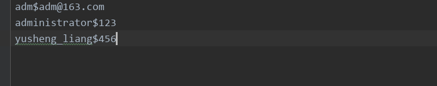

原文出处:本文由博客园博主梦想一步登天提供。
原文连接:https://www.cnblogs.com/june-L/p/11601069.html
原文连接:https://www.cnblogs.com/june-L/p/11601069.html
python面向函数式编程，模拟用户登录验证、注册的代码实现。
主要有以下两个文件：
1、user.txt文档文件，相当于数据库的用户信息表，主要是记录用户名和密码。
注意：1）此文档需要与.py文件放在同一个路径下。
2）用户名、密码在存储时，是以$符号区别开。

2、模拟用户登录验证、注册的代码实现。


1 #!/usr/bin/env python
2 # -*- coding:utf-8 -*-
3
4 def login(username, password):
5 """
6 用于用户登录验证
7 :param username: 用户名
8 :param password: 密码
9 :return: True,登录成功；False，登录失败。
10 """
11 with open("user.txt", "r", encoding="utf-8") as f:
12 for line in f:
13 line = line.strip() #默认strip无参数，会去掉首尾空格、换行符；有参数则去除指定值
14 line_list = line.split("$") #以$符号提取用户名和密码
15 if username == line_list[0] and password == line_list[1]:
16 return True
17 else:
18 return False
19
20 def register(username, password):
21 """
22 用户注册
23 :param username:用户名
24 :param password:密码
25 :return: True，注册成功
26 """
27 with open("user.txt", "a", encoding="utf-8") as f:
28 temp = "\n" + username + "$" + password # "\n"换行符
29 f.write(temp)
30 return True
31
32 def user_exsit(username):
33 """
34 注册时，判断用户名是否存在
35 :param username:用户名
36 :return:True, 用户名已存在
37 """
38 with open("user.txt", "r", encoding="utf-8") as f:
39 for line in f:
40 line = line.strip()
41 line_list = line.split("$")
42 if username == line_list[0]:
43 return True
44 return False
45
46 def main():
47 print("欢迎您使用本系统,请输入你进行操作选项。")
48 inp = input("1.登录；2.注册。请输入编号： ")
49 if inp == "1":
50 times = 1
51 while True:
52 if times == 4:
53 print("输入3次用户名或密码不正确，请在一小时后再重试。")
54 break
55 user = input("请输入你的用户名：")
56 pwd = input("请输入你的密码：")
57 is_login = login(user, pwd)
58 if is_login:
59 print("恭喜您！系统登录成功。")
60 else:
61 print("用户名或密码不正确。")
62 times += 1
63 if inp == "2":
64 user = input("请输入你的用户名：")
65 pwd = input("请输入你的密码：")
66 if user_exsit(user):
67 print("用户名已经存在，注册失败！")
68 else:
69 ret = register(user, pwd)
70 if ret:
71 print("注册成功！")
72 else:
73 print("注册失败！")
74
75 main()